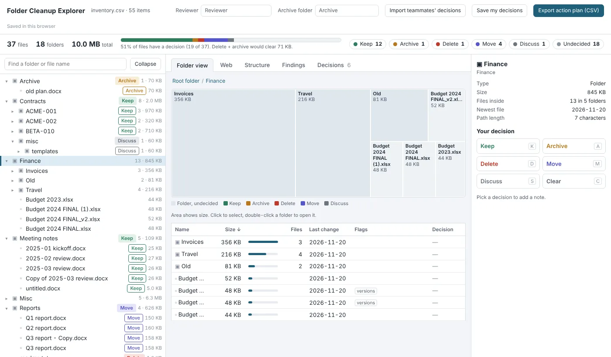
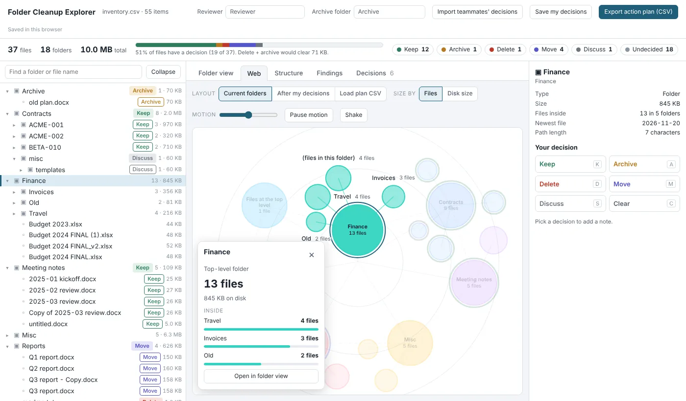
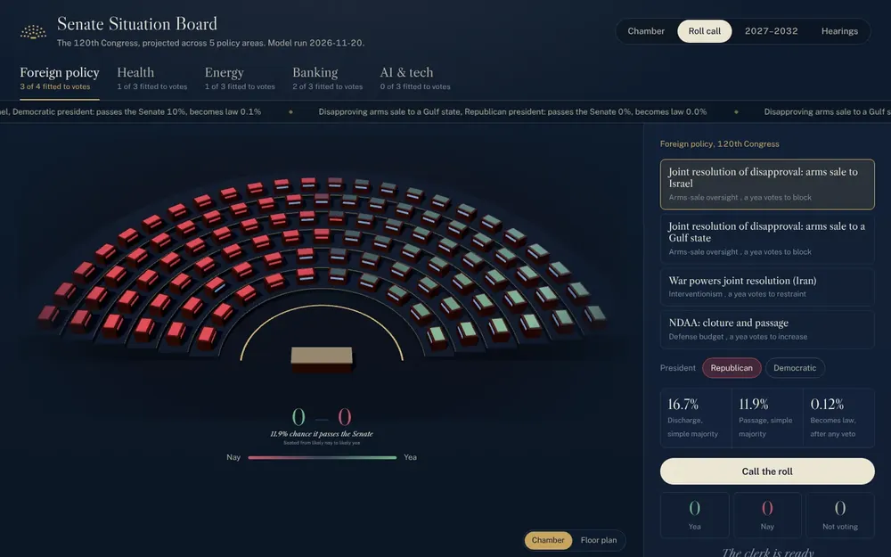

Christopher
01 signal · Ottawa, Ontario
Engineer in defence procurement, building the dashboards I wish I had.
Biomedical Mechanical Engineering from the University of Ottawa, 2026. Procurement officer at National Defence. I build analytics tools and run an engineering media company on the side.
3D modelF1-style go kartI designed the frame. Push-rod suspension front and rear, rear differential, Suzuki GSX 1100 engine.
SimulationSenate Situation BoardProjects how 100 senators are likely to vote across five policy areas.
ToolFolder Cleanup ToolkitReview a messy folder as a team, then copy the approved layout into a clean one.
· Email me · Career · All work · scroll or press 1 to 8 for the full instrument
x(t) + i·y(t) = Σ cₙ e^(i2πnt)
Every stroke you see is drawn by the circles. Each one is a single frequency, and added together they write the word.
02 career · and how I work
From federal co-op to procurement officer.
Aug 2026 to now
Procurement Officer
Department of National Defence
Jan to Jun 2026
Technical Authority Assistant
DND, DGLEPM (co-op)
About 3.5 years
Federal co-op, six placements
CAF, Transport Canada, ESDC, ISC, The Ottawa Hospital and DND
Completed May 2026
BASc, Biomedical Mechanical Engineering
University of OttawaMost of my degree was spent inside the federal government through co-op. That taught me how large equipment programs are bought, funded and reported on, and where the data gets stuck. I build the tool when the spreadsheet stops being enough.
A Senate policy simulator, a document-library toolkit, my defence procurement dashboard, a Jellyfin companion app and a TV home screen all exist because nothing off the shelf did the job. I also co-founded EntroCAD, an engineering media company.
03 skills · colour is the kind of skill
Hover a skill to watch it drawn.
- engineering
- Biomedical and mechanical design Mechanical vibration analysis Capstone design and prototyping SolidWorks assemblies
- procurement
- Defence procurement Technical authority support Federal government processes
- analytics
- Engineering analytics dashboards Financial reporting charts Data storytelling
- software
- Python React and Vite Monte Carlo and probit modelling Automated tests GitHub Actions and Pages
- working style
- Bilingual, English and French Builds tools independently Writes and publishes
04 work · select a project
Work
Senate Situation Board
Projects how the 100 senators are likely to vote on foreign policy, healthcare, energy, banking and AI and tech measures across the 120th to 122nd Congresses. Python engine, React and 3D web board.
Read the case file05 case file · open source
File Cleanup Tool
Review a messy folder visually with your team, agree on a cleaner structure, and copy it into a new folder. Your original files are never moved, renamed or deleted.
§ problem
Built for shared document libraries such as SharePoint and OneDrive sync folders and network drives, where several people need to agree on where things should go before anything changes.
§ measurements
5commands: demo, scan, explore, suggest, apply
34tests, including a real browser test
0third-party packages, no network, no accounts
0changes ever made to the original folder
§ workflow
- Scan and explore. One command builds a single offline HTML page that shows the folders as a tree, a bubble map and cards, with duplicate and version flags.
- Decide. Each reviewer marks any folder or file Keep, Archive, Delete, Move to a new location, or Discuss, then saves their decisions.
- Merge. The lead imports everyone's files. The page shows agreement and conflicts, and exports the team result: majority wins, ties become Discuss.
- Draft from rules. A small JSON file describing the structure you want produces a first-draft plan without clicking through thousands of files.
- Preview, then copy. A dry run reports how many files fall under each action. Adding a flag copies the approved layout into a new folder.
§ components · hover to draw
Offline explorer page
Bubble map
Five decisions per item
Team merge
Rules file
Safe copy engine
Python library
§ safeguards
- Dry run by default. Nothing is copied until you add the go flag.
- The destination cannot be inside the source folder.
- A destination that looks like OneDrive or SharePoint is refused unless you pass an explicit override, because the copies would upload.
- Files are copied, never moved. Sizes are verified, every result is logged, and a stopped run can resume.
- Two files that land on the same name both survive, with (2) or (3) added.
- Windows paths over 260 characters are handled. Duplicate detection uses names and sizes only.
§ tests
Unit tests cover the scanner, plan reader, rules and copy engine. A browser test, run when Playwright is installed, makes decisions in the real explorer page, exports the plan and copies with apply.



06 case file · simulation
Senate Situation Board
A Senate policy simulation that projects how the 100 senators are likely to vote, and which measures could pass, across the 120th to 122nd Congresses. Foreign policy was the first module. Healthcare, energy, banking and AI and tech plug into the same core engine.
§ goal
One engine for scoring senators, gating measures through committees and floor rules, and running elections forward, where a new policy area is one file plus an overrides sheet.
§ measurements
5policy sectors on one shared engine
16scored policy dimensions
4,400+lines of Python in the engine and scripts
116offline tests, no network or keys needed
§ pipeline
- Build the roster. Senators, IDs, caucus, class and seniority come from congress-legislators, with Voteview DW-NOMINATE history and Congress.gov as a cross-check. A validation gate fails the build if the roster is wrong.
- Score each senator. Every dimension runs from -2 to +2 with an uncertainty. Scores come from a formula on DW-NOMINATE, from the caucus median when there is no record, or from a manual override that cites roll calls.
- Calibrate. A pooled probit per dimension is fitted to Senate roll calls. Near-identical votes are down-weighted, each senator's own deviation is estimated, and held-out accuracy is reported.
- Simulate a measure. A Monte Carlo run sends it through simple majority, cloture, two-thirds votes, vetoes and overrides, under both a Republican and a Democratic White House.
- Project forward. The 2028 and 2030 elections, retirements and committee re-projections are simulated, and every preset measure is re-run in each Congress.
- Publish. Results export to JSON for a web board with a 3D chamber, a roll-call mode, a 2027 to 2032 timeline and a hearings schedule, deployed by GitHub Actions.
§ components · hover to draw
Roster and validation
DW-NOMINATE scores
Probit calibration
Monte Carlo votes
Committee projection
Election model
PAC money test
Hearings schedule
§ limits, stated on the site
- The output is a projection from a model, and committee assignments are projections until the conferences decide.
- Dimensions without usable roll calls keep a starting formula with wide uncertainty, and their measures are labelled illustrative.
- AI and tech has no fitted dimension, because the one AI roll call passed 99 to 1, so it relies on sponsorship-based overrides.
- PAC donations are tested against votes first and only used where they carry information the ideology mapping misses.
- Seeded overrides are flagged unverified until each is checked against the cited roll call.


07 model · cad assembly
An F1-style go kart, drawn by 3D ellipses
F1-Style Go Kart model. I designed the frame and assembled all digitally available components intended for track use. Design features: Front and rear push-rod suspension, Rear differential, and a Suzuki GSX 1100 engine.
A mill engine, drawn by 3D ellipses
Small reciprocating mill engine designed in Autodesk. Features a single cylinder with a separate valve cylinder and port block. A trunk guide, in three sub-sections, keeps the piston rod running straight. The linkage and drive train are a con rod, eccentric strap, flywheel and drive pulley, all mounted on a base frame with a bearing and a top block.
§ measurements
165parts in the assembly
358solid bodies
73,196faces in the source model
251assembly placements
269 MBSTEP file, simplified here to about 175,000 triangles
480ellipses in the Fourier trace
§ how it is drawn
- Read the STEP file with a CAD kernel and pull out the 600 longest edges of the assembly.
- Join them into one closed path in 3D, with straight bridges between separate edges.
- Take a Fourier transform of x, y and z. Each harmonic becomes an ellipse turning in 3D space.
- Chain the 480 strongest harmonics tip to tail. They hold 99.9% of the path's energy.
- Fade in the solid once the line closes, shaded part by part from a simplified mesh.
§ measurements
95parts in the assembly
108solid bodies
4,837faces in the source model
22,934edges in the source model
16 MBSTEP file, simplified here to about 67,000 triangles
480ellipses in the Fourier trace
§ how it is drawn
- Read the STEP file with a CAD kernel and pull out the 500 longest edges of the assembly.
- Join them into one closed path in 3D, with straight bridges between separate edges.
- Take a Fourier transform of x, y and z. Each harmonic becomes an ellipse turning in 3D space.
- Chain the 480 strongest harmonics tip to tail. They hold 99.8% of the path's energy.
- Fade in the solid once the line closes, shaded part by part from a simplified mesh.
§ make your own
The tool behind this scene is open source. Give it a STEP file and it writes a page like this one, with the Fourier equation available to read or export as a text file.
CAD_TO_FOURIER on GitHub08 contact · say hello
Let's talk engineering, procurement and analytics.
The circles draw whatever you type. Nothing is stored or sent.
Emailchristopher@accad.org
Drawn byChristopher
LocationOttawa, ON
Sheet8 of 8
RevisionOct 2026
Open to conversations about engineering, procurement and analytics.